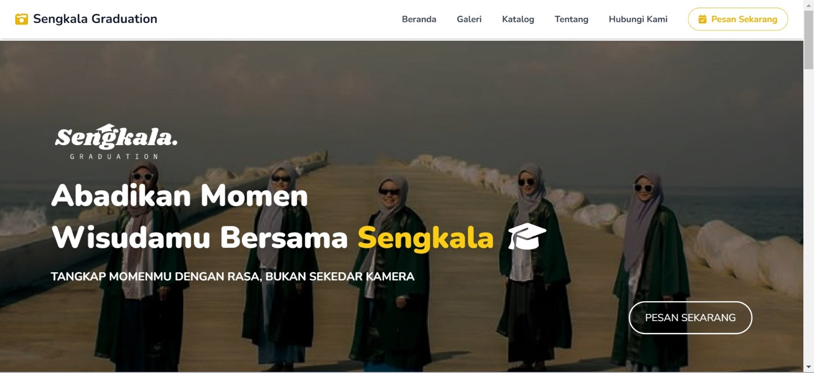
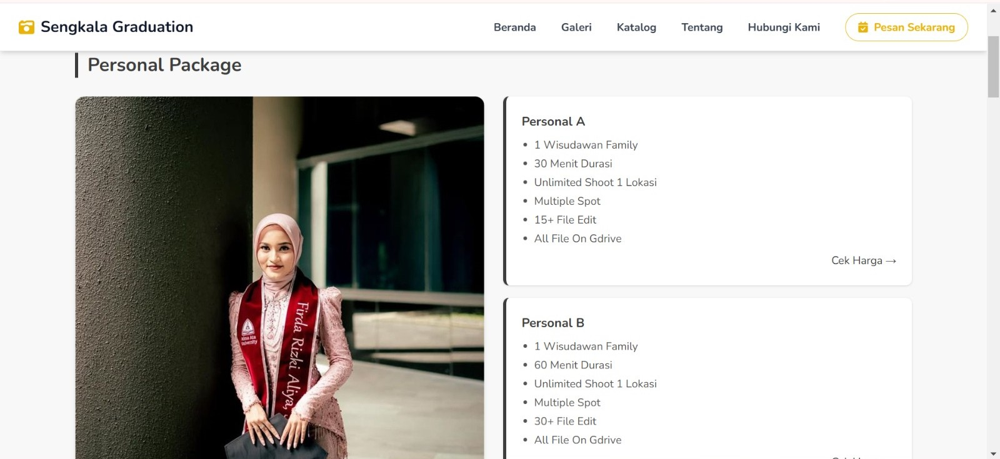
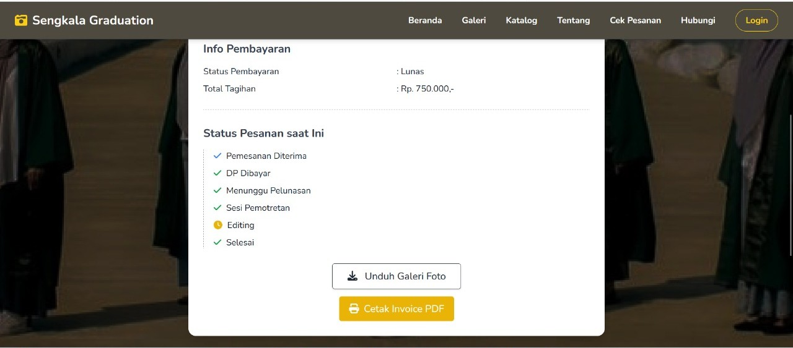

FotografiSistem Informasi
Website Sengkala Graduation
Peran
Analisis dan pengembangan
Metode
Waterfall
Narasumber
Owner Sengkala Graduation
Teknologi
CodeIgniter 4, Tailwind CSS, MySQL
Tentang proyek
Sistem informasi manajemen untuk layanan fotografi kelulusan Sengkala Graduation. Proyek ini dirancang bersama owner usahanya, dengan metode Waterfall, supaya pengelolaan layanan fotografi berjalan lebih tertata lewat website yang nyaman dipakai di berbagai ukuran layar.
Yang saya lakukan
Dari menggali kebutuhan bersama owner sampai website dikembangkan.
Analisis kebutuhan
- Melakukan requirement gathering dan analisis kebutuhan bersama owner untuk merancang sistem informasi manajemen layanan fotografi kelulusan dengan metode Waterfall.
Pengembangan
- Mengembangkan antarmuka web yang responsif sesuai alur proses pengguna yang telah diidentifikasi.
- Membangun website menggunakan CodeIgniter 4 dan Tailwind CSS, dengan MySQL sebagai database.
Teknologi dan metode
CodeIgniter 4Tailwind CSSMySQLMetode Waterfall
Tangkapan layar

